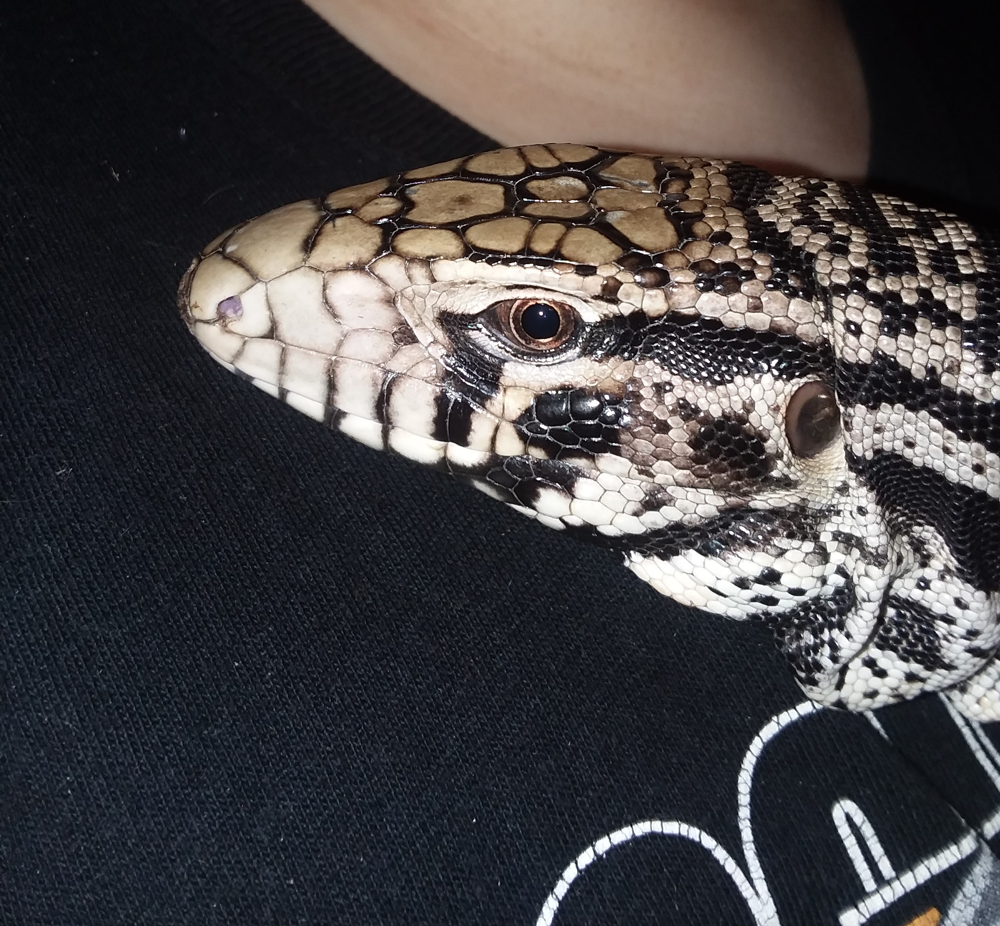

 Tegu Room
home
gender
husbandry
food
Tegus are omnivores meaning they eat both plant and vegetation. In this section we will talk about what to feed your tegu, and way how to feed them.
First we'll talk about how to feed them. Some tegus have food agression, but the good things about tegus is that they are highly trainable and can be trained not to be. Some people prefer feeding in the enclosures some outside, truthfully, it doesn't matter either way. No matter what most tegus are skittish when you first get them, you have to show them who you are. Some people just put the food in a bowl, some people use tonges to feed, others hand feed. The first 2 are safe, but hand feeding is not. Nobody should hand feed without 2 things:
If you don't have these don't try, you will get hurt.Even with these you may get bit.